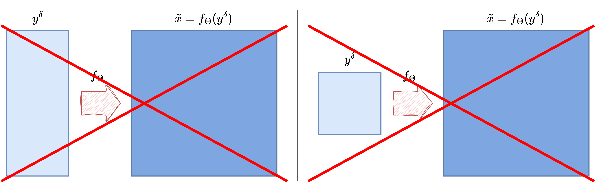
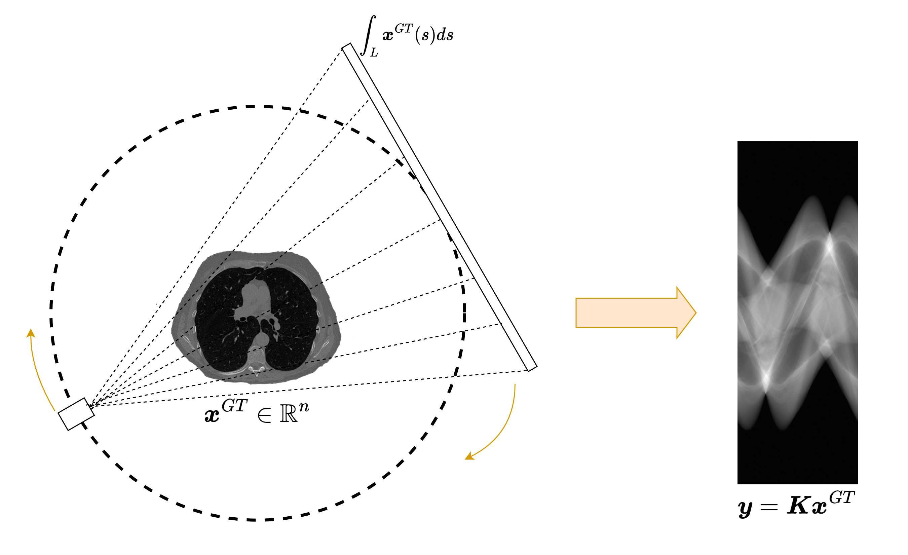

Cross-Domain End-to-End Reconstruction#
So far, the end-to-end models discussed in this chapter have all assumed that the input and output live in essentially the same domain. For example, in deblurring or denoising, both the corrupted datum \(y^\delta\) and the reconstruction \(x\) are images on the same spatial grid. In that setting, a CNN, a ResCNN, or a UNet can directly process the measured image and return a cleaned image of the same size.
Many inverse problems do not have this structure. In Computed Tomography (CT), for instance, the measured datum is a sinogram, while the target is an image. In other words, the input and the output do not only have different numerical values: they also have different geometry, different semantics, and often different dimensions. This is the typical setting of a cross-domain inverse problem.
Because of this mismatch, one cannot simply reuse the same end-to-end architectures without some modification. This notebook explains why the mismatch matters, why naive resizing is usually not enough, and how one can still build an effective end-to-end pipeline by combining a classical reconstruction operator with a neural network.
{kind=link}

Why Same-Domain Models Are Not Enough#
Architectures such as CNNs and UNets are built around local convolutions acting on regular image grids. This is exactly what makes them effective when both the input and output are images: spatial locality is meaningful, translation-equivariant processing is natural, and the network can gradually refine the corrupted image.
In CT, however, the situation is different. The measured datum \(y = Kx\) is a collection of line integrals. Each value in the sinogram depends on many pixels of the unknown image, and each pixel of the image contributes to many sinogram entries. The relationship between the two domains is therefore highly non-local. A local convolution applied directly on the sinogram does not naturally correspond to a local correction in the image domain.
This is the first key message of the cross-domain setting: even if a model is powerful in the image domain, it may become badly matched to the problem if the measurements live in a very different domain.
{kind=link}

Why Resizing the Measurements Is Usually a Bad Idea#
A tempting workaround is to resize the sinogram so that it has the same shape as the target image and then feed it to a UNet. This may look technically convenient, but it usually performs poorly.
The reason is not only dimensional. Resizing changes the array shape, but it does not restore the correct spatial meaning of the data. Two neighboring detector bins in a sinogram are not equivalent to two neighboring pixels in an image, and a translation in the sinogram domain does not correspond to a translation of the reconstructed object in any simple way. Consequently, even if the tensor shape becomes compatible with a CNN, the inductive bias of the architecture remains poorly aligned with the problem.
This is why cross-domain reconstruction usually requires a first step that maps the measurement back into the image domain before the neural network is applied.
Preprocessing: From Measurement Domain Back to Image Domain#
A classical solution is to introduce a fast preprocessing operator that maps the measurement \(y^\delta\) into a crude image-domain estimate \(\tilde{x}\). In CT, the standard choice is Filtered Backprojection (FBP):
The role of this step is not to solve the inverse problem perfectly. Its main purpose is to bridge the domain gap. Once the data have been mapped back into the image domain, a CNN or a UNet can operate on an object with the correct geometry and spatial interpretation.
This leads to a simple but very effective hybrid pipeline:
In this architecture, the analytical operator handles the domain conversion, while the neural network acts as a learned post-processing stage that suppresses artifacts and restores details. This idea is extremely common in imaging inverse problems, because it combines model-based structure with the expressive power of deep learning.
A Practical Cross-Domain UNet Pipeline#
A very natural architecture in this setting is therefore an FBP + UNet pipeline.
The forward operator \(K\) produces the sinogram from the clean image.
Noise is added in the sinogram domain to simulate realistic measurements.
FBP maps the sinogram back to an approximate reconstruction in the image domain.
A UNet refines the FBP image and produces the final prediction.
From a training point of view, the procedure is still supervised. If the clean training images are denoted by \(\{x_i\}_{i=1}^N\), then for each batch we generate
compute
and train the network by minimizing, for example,
The important point is that the network no longer learns a direct mapping from sinograms to images. Instead, it learns how to improve a coarse reconstruction that already lives in the correct domain.
import glob
import importlib.util
import sys
from pathlib import Path
import matplotlib.pyplot as plt
import numpy as np
import torch
from PIL import Image
from torch import nn
from torch.utils.data import DataLoader, Dataset
from torchvision import transforms
from tqdm.auto import tqdm
here = Path.cwd().resolve()
for base in (here, *here.parents):
if (base / 'weights').exists() and (base / 'Mayo').exists():
book_root = base
break
else:
raise FileNotFoundError('Could not locate the course root containing Mayo and weights.')
for base in (here, *here.parents):
if (base / 'IPPy').exists():
ippy_root = base / 'IPPy'
break
else:
raise FileNotFoundError('Could not locate the local IPPy package.')
if str(book_root) not in sys.path:
sys.path.insert(0, str(book_root))
operators_spec = importlib.util.spec_from_file_location('course_ippy_operators', ippy_root / 'operators.py')
operators = importlib.util.module_from_spec(operators_spec)
operators_spec.loader.exec_module(operators)
from IPPy import models
weights_dir = book_root / 'weights'
weights_dir.mkdir(exist_ok=True)
def get_device():
if torch.cuda.is_available():
return 'cuda'
try:
if torch.backends.mps.is_available():
return 'mps'
except AttributeError:
pass
return 'cpu'
def gaussian_noise(y, noise_level):
e = torch.randn_like(y, device=y.device)
return e / torch.norm(e) * torch.norm(y) * noise_level
class MayoDataset(Dataset):
def __init__(self, data_path, data_shape):
super().__init__()
self.data_path = data_path
self.data_shape = data_shape
self.fname_list = glob.glob(f'{data_path}/*/*.png')
def __len__(self):
return len(self.fname_list)
def __getitem__(self, idx):
img_path = self.fname_list[idx]
x = Image.open(img_path).convert('L')
x = transforms.Compose([
transforms.ToTensor(),
transforms.Resize(self.data_shape),
])(x)
return x
device = get_device()
train_dataset = MayoDataset(data_path=str(book_root / 'Mayo' / 'train'), data_shape=256)
test_dataset = MayoDataset(data_path=str(book_root / 'Mayo' / 'test'), data_shape=256)
train_loader = DataLoader(train_dataset, batch_size=4, shuffle=True)
test_loader = DataLoader(test_dataset, batch_size=4, shuffle=False)
K = operators.CTProjector(
img_shape=(256, 256),
angles=np.linspace(0, np.pi, 60, endpoint=False),
det_size=512,
geometry='parallel',
)
print('Device:', device)
print('Training images:', len(train_dataset))
print('Test images:', len(test_dataset))
print('Weights directory:', weights_dir)
Training a Cross-Domain UNet#
The code below implements the full training loop. Notice the structure of each iteration:
load a clean image \(x\);
generate the sinogram \(y = Kx\);
add noise to obtain \(y^\delta\);
reconstruct a coarse image \(\tilde{x} = \operatorname{FBP}(y^\delta)\);
refine \(\tilde{x}\) with a UNet;
compare the output with the clean target \(x\) using
MSELoss.
This is still an end-to-end training pipeline, but it is no longer purely image-to-image. The analytical preprocessing step is essential because it re-enters the image domain before the network is applied.
torch.manual_seed(0)
model = models.UNet(
ch_in=1,
ch_out=1,
middle_ch=[32, 64, 128],
n_layers_per_block=2,
down_layers=('ResDownBlock', 'ResDownBlock'),
up_layers=('ResUpBlock', 'ResUpBlock'),
final_activation=None,
).to(device)
optimizer = torch.optim.Adam(model.parameters(), lr=1e-3)
loss_fn = nn.MSELoss()
num_epochs = 50
noise_level = 0.01
history = []
weights_path = weights_dir / 'CTUNet.pth'
for epoch in range(num_epochs):
model.train()
epoch_loss = 0.0
progress_bar = tqdm(train_loader, desc=f'Epoch {epoch + 1}/{num_epochs}', leave=True)
for step, x_batch in enumerate(progress_bar, start=1):
x_batch = x_batch.to(device)
with torch.no_grad():
y_batch = K(x_batch)
y_batch = y_batch + gaussian_noise(y_batch, noise_level=noise_level)
x_fbp = K.FBP(y_batch)
prediction = model(x_fbp)
loss = loss_fn(prediction, x_batch)
optimizer.zero_grad()
loss.backward()
optimizer.step()
epoch_loss += loss.item()
progress_bar.set_postfix(batch_loss=f'{loss.item():.6f}', avg_loss=f'{epoch_loss / step:.6f}')
history.append(epoch_loss / len(train_loader))
print(f'Epoch {epoch + 1}: training loss = {history[-1]:.6f}')
torch.save(model.state_dict(), weights_path)
print(f'Saved cross-domain UNet weights to: {weights_path}')
reloaded_model = models.UNet(
ch_in=1,
ch_out=1,
middle_ch=[32, 64, 128],
n_layers_per_block=2,
down_layers=('ResDownBlock', 'ResDownBlock'),
up_layers=('ResUpBlock', 'ResUpBlock'),
final_activation=None,
)
reloaded_model.load_state_dict(torch.load(weights_path, map_location='cpu', weights_only=True))
reloaded_model = reloaded_model.to(device)
reloaded_model.eval()
with torch.no_grad():
x_true = next(iter(test_loader))[0:1].to(device)
y_delta = K(x_true)
y_delta = y_delta + gaussian_noise(y_delta, noise_level=noise_level)
x_fbp = K.FBP(y_delta)
x_rec = reloaded_model(x_fbp)
mse_fbp = torch.mean((x_fbp - x_true) ** 2).item()
mse_unet = torch.mean((x_rec - x_true) ** 2).item()
plt.figure(figsize=(16, 4))
plt.subplot(1, 4, 1)
plt.imshow(x_true.cpu().squeeze(), cmap='gray')
plt.title('Ground truth')
plt.axis('off')
plt.subplot(1, 4, 2)
plt.imshow(x_fbp.cpu().squeeze(), cmap='gray')
plt.title(f'FBP\nMSE: {mse_fbp:.5f}')
plt.axis('off')
plt.subplot(1, 4, 3)
plt.imshow(x_rec.cpu().squeeze(), cmap='gray')
plt.title(f'UNet after FBP\nMSE: {mse_unet:.5f}')
plt.axis('off')
plt.subplot(1, 4, 4)
plt.plot(history)
plt.title('Training loss')
plt.xlabel('Epoch')
plt.grid(alpha=0.3)
plt.tight_layout()
plt.show()
Extensions and Limitations#
The FBP + UNet pipeline is one of the simplest and most classical ways of handling cross-domain inverse problems, but it is not the only one.
One may replace FBP by another fast analytical or variational reconstruction method.
One may train the network to predict a residual correction on top of the FBP image instead of the full reconstruction.
One may incorporate the forward operator more explicitly inside the architecture, leading to unrolled or data-consistent networks.
At the same time, this approach still has limitations. Once the preprocessing step has been applied, the network is operating only in the image domain, so it may partially forget the exact measurement consistency. In difficult problems, this can lead to visually plausible images that do not perfectly match the measured data. This is one of the motivations for more advanced model-based deep-learning methods, where data consistency is enforced more explicitly inside the architecture.
Exercises#
Why is a direct convolutional mapping from sinogram to image usually a poor architectural match?
Explain why resizing a sinogram to image size does not solve the real problem.
In the FBP + UNet pipeline, what is the role of the preprocessing step?
Why can a UNet operate effectively on the FBP reconstruction even though it would struggle on the raw sinogram?
Code exercise: change the number of projection angles in the CT operator and observe how the FBP image and the final UNet reconstruction change.
Code exercise: modify the UNet width by changing
middle_chand compare reconstruction quality against computational cost.
Further Reading#
For the classical UNet architecture, see [24]. For a representative example of a learned post-processing approach in CT based on FBP followed by a CNN, see [15]. For a broader overview of deep learning methods for inverse problems, including the balance between model-based and purely learned components, see [2]. For an example of integrating the forward model more tightly into the architecture, see [1].